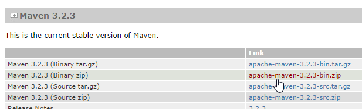
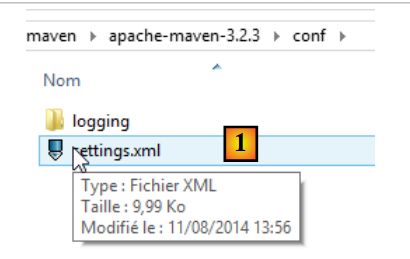
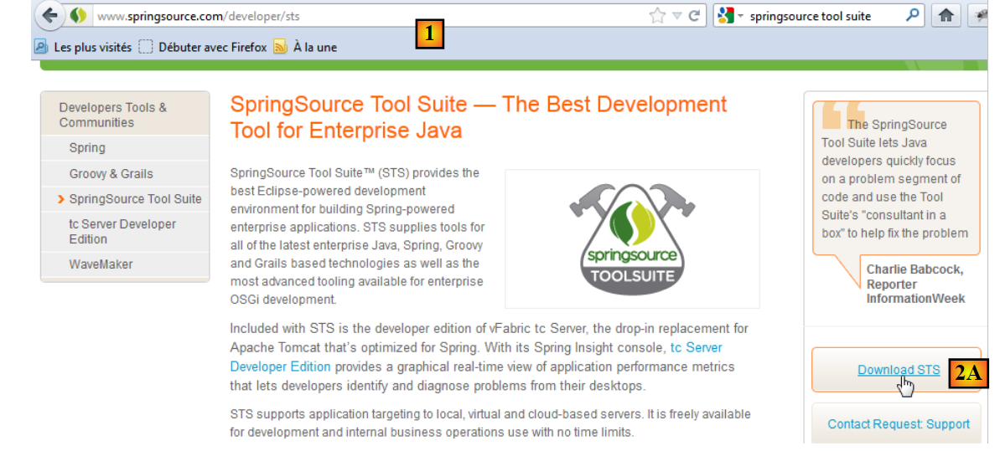
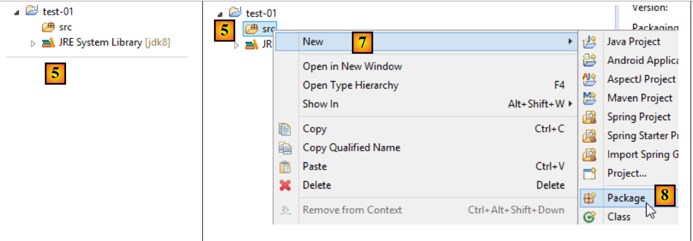
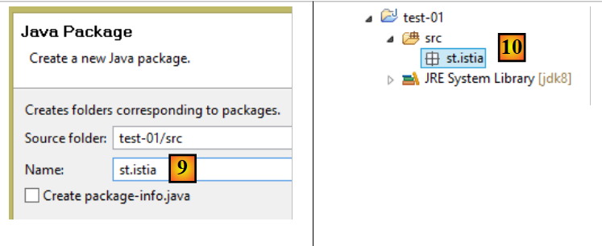
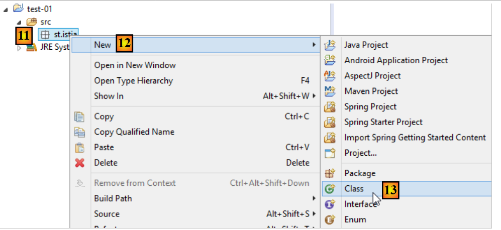
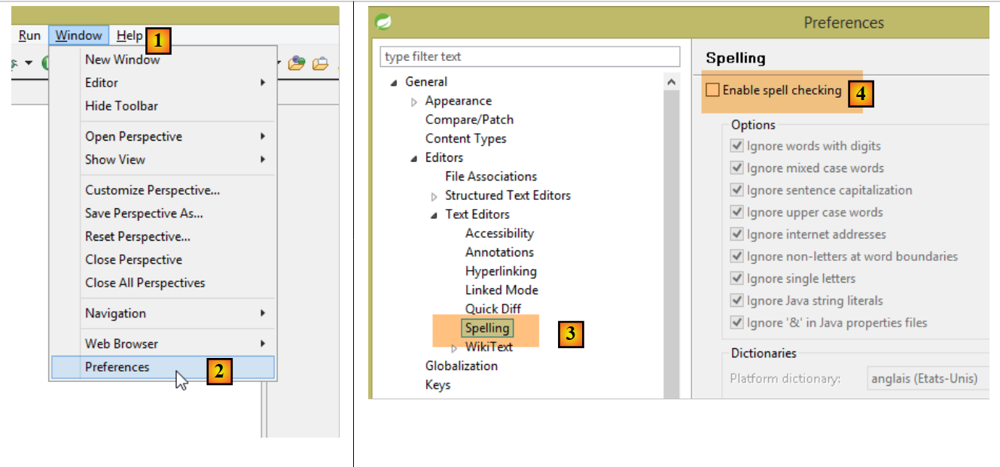
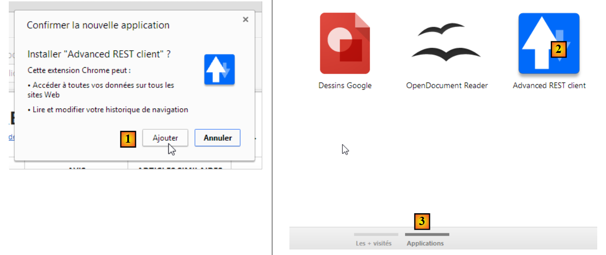
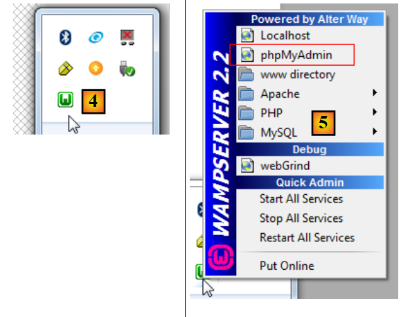

22. 附录
本文介绍如何在 Windows 7 或 8 系统上安装本文档中使用的工具。屏幕截图通常展示的是已安装的 SGBD 及工具的 64 位版本。读者可根据自身环境进行调整。
22.1. 安装 JDK
在 URL 中，[http://www.oracle.com/technetwork/java/javase/downloads/index.html]（2014年10月）是最新版本。 下文将把 JDK 的安装目录称为 <jdk-install>。
 |
22.2. Maven的安装
Maven 是一款用于管理 Java 项目依赖关系的工具，功能远不止于此。截至 2014 年 10 月，其版本为 URL 和 [http://maven.apache.org/download.cgi]。
 |
下载并解压该压缩包。我们将 Maven 的安装目录命名为 <maven-install>。
 |
- 在 [1] 中，文件 [conf / settings.xml] 用于配置 Maven；
其中包含以下内容：
<!-- localRepository
| The path to the local repository maven will use to store artifacts.
|
| Default: ${user.home}/.m2/repository
<localRepository>/path/to/local/repo</localRepository>
-->
第 4 行的默认值可能会给某些使用 Maven 的软件带来问题，如果像我一样，您的 {user.home} 路径中包含空格（例如 [C:\Users\Serge Tahé]）。我们将指定（第 7 行）另一个文件夹作为 Maven 的本地仓库：
<!-- localRepository
| The path to the local repository maven will use to store artifacts.
|
| Default: ${user.home}/.m2/repository
<localRepository>/path/to/local/repo</localRepository>
-->
<localRepository>D:\Programs\devjava\maven\.m2\repository</localRepository>
请避免在第 7 行使用包含空格的路径。
22.3. 安装 STS（Spring Tool Suite）
我们将安装 SpringSource Tool Suite [http://www.springsource.com/developer/sts]（2014年10月版），这是一个预装了大量与 Spring 框架相关插件的 Eclipse 环境，同时还预装了 Maven 配置。
 |
- 访问 SpringSource 工具套件 (STS) [1]，以下载 STS [2A] [2B] 的最新版本，
 |
 |
- 下载的文件是一个安装程序，它会创建文件树 [3A] [3B]。在 [4] 中，运行可执行文件，
- 在 [5] 中，关闭欢迎窗口后显示 IDE 的工作窗口。在 [6] 中，显示应用程序服务器窗口，
 |
- 在 [7] 中，显示服务器窗口。已注册一台服务器。这是一台兼容 Tomcat 的 VMware 服务器。
需向 STS 指定 Maven 的安装目录：
 |
- 在 [1-2] 中，配置 STS；
- 在 [3-4] 中，添加一个新的 Maven 安装；
 |
- 在 [5] 中，指定 Maven 的安装目录；
- 在 [6] 中，完成向导；
- 在 [7] 中，将新安装的 Maven 设为默认安装；
 |
- 在 [8-9] 中，需验证 Maven 的本地仓库，即它将下载依赖项并存放的文件夹，以及 STS 将构建的工件存放的位置；
还需选择一个 JDK（Java 开发工具包），以便同时运行带 Maven 和不带 Maven 的 Eclipse 项目 [1-5]。
 |
使用 [4] 时，可以添加 JDK（Java 开发工具包）或 JRE（Java 运行时环境）。后者能够执行 .class 文件，但无法编译 .java 文件来生成它们。 JDK 则兼具这两种功能。选择 JDK 是因为某些 Maven 操作需要 JDK。
创建 Eclipse 项目时，请按以下步骤操作：
 |
- 在 [3] 中，为项目命名；
- 在 [4] 步骤中，指定一个现有的空文件夹；
 |
- 在 [5] 中，选择已创建的项目；
- 在 [5-8] 中，创建一个包。包是一个包含 Java 代码的文件夹。如果两个类属于不同的包，它们可以具有相同的名称。在一个项目中，不能存在两个同名的包。因此，不能使用在项目依赖项中已存在的包名。 企业通常会采用包含企业名称、项目名称及其不同分支的命名规则作为包名；
 |
- 在 [9] 中，为包命名；
- 在 [10] 中，所创建的包；
 |
- 在 [11-13] 中，在已创建的包中创建一个类；
 |
- 在 [14] 中，为类命名（必须符合 CamelCase 规范——名称中的每个单词首字母大写，其余小写）；
- 在 [15] 中，检查该包；
- 在 [16] 中，勾选复选框。此操作将生成静态方法 [main]。该方法使类可执行，即该项目中第一个要执行的类；
- 在 [17] 中，即这样创建的类；
在方法 [main] 中输入以下代码，该代码将在控制台显示文本：
package st.istia;
public class Test01 {
public static void main(String[] args) {
System.out.println("test01");
}
}
 |
- 在 [18-20] 中，执行该类。其方法 [main] 随即被执行；
 |
- 在 [21-22] 中，应用程序的结果；
如果视图 [Console] 不存在，请按以下步骤操作 [1-4]：
 |
导入 Eclipse 项目时，可能会出现错误。这可能是由于项目配置不正确所致。若要修复错误（如有），请按以下步骤操作：
 |
- 在 [1] 中，修改项目的 [Build Path]；
 |
- 更改为 [2]，该项目配置为使用 JVM 1.5；
- 为 [3]，删除此依赖项；
- 在 [4] 中，添加一个新的依赖项；
 |
- 在 [5] 中，添加 JVM；
- 在 [6] 中，选择该条目的 JVM；
完成上述操作后，确认所有设置，然后转到项目 [7] 的属性 [Java compiler]：
 |
- 在 [8] 中，要求编译器支持 Java 语言的所有特性，直至 1.7（或 1.8）版本（含）；
- 在 [9] 中，进行验证；
- 在 [10] 中，重新配置后的项目不应再出现错误；
此外，导入的项目可以使用 UTF-8 字符编码。请按以下步骤在导入的项目 [1-4] 中设置此编码：
 |
此外，建议在项目中禁用拼写检查功能，以免法语注释被标记为错误。请按照以下步骤操作：
 |
22.4. 安装 NetBeans
NetBeans 可在 URL [http://netbeans.org/downloads/] 处获取。
 |
可选用上述 Java 版本 SE（标准版）。
22.5. 安装 Chrome 插件 [Advanced Rest Client]
本文档使用谷歌Chrome浏览器（http://www.google.fr/intl/fr/chrome/browser/）。我们将为其添加[Advanced Rest Client]扩展程序。操作步骤如下：
- 使用 Chrome 浏览器访问 [Google Web store] 网站（https://chrome.google.com/webstore）；
- 搜索应用程序 [Advanced Rest Client]：
 |
- 此时该应用程序可供下载：
 |
- 要获取该应用，您需要创建一个 Google 账户。随后 [Google Web Store] 会要求确认 [1]：
 |
- 在 [2] 中，已添加的扩展程序可在 [Applications] [3] 选项中找到。该选项会显示在您在浏览器中创建的每个新标签页（CTRL-T）上。
22.6. Java中的jSON管理
[Spring MVC]框架以对开发者完全透明的方式 ，使用jSON和[Jackson]库。为说明什么是jSON （JavaScript 对象表示法），我们在此展示一个程序，该程序将对象序列化为 jSON，并通过反序列化生成的 jSON 字符串来还原初始对象。
“Jackson”库可用于生成：
- 对象的 jSON 字符串：new ObjectMapper().writeValueAsString(object)；
- 根据字符串 jSON 创建对象：new ObjectMapper().readValue(jsonString, Object.class)。
这两种方法都可能抛出 IOException 异常。以下是一个示例。
上述项目是一个Maven项目，其中包含以下[pom.xml]文件；
<?xml version="1.0" encoding="UTF-8"?>
<project xmlns="http://maven.apache.org/POM/4.0.0"
xmlns:xsi="http://www.w3.org/2001/XMLSchema-instance"
xsi:schemaLocation="http://maven.apache.org/POM/4.0.0 http://maven.apache.org/xsd/maven-4.0.0.xsd">
<modelVersion>4.0.0</modelVersion>
<groupId>istia.st.pam</groupId>
<artifactId>json</artifactId>
<version>1.0-SNAPSHOT</version>
<dependencies>
<dependency>
<groupId>com.fasterxml.jackson.core</groupId>
<artifactId>jackson-databind</artifactId>
<version>2.3.3</version>
</dependency>
</dependencies>
</project>
- 第12-16行：引入“Jackson”库的依赖项；
类 [Personne] 如下所示：
package istia.st.json;
public class Personne {
// 数据
private String nom;
private String prenom;
private int age;
// 制造商
public Personne() {
}
public Personne(String nom, String prénom, int âge) {
this.nom = nom;
this.prenom = prénom;
this.age = âge;
}
// 签名
public String toString() {
return String.format("Personne[%s, %s, %d]", nom, prenom, age);
}
// 获取器和设置器
...
}
类 [Main] 如下：
package istia.st.json;
import com.fasterxml.jackson.databind.ObjectMapper;
import java.io.IOException;
import java.util.HashMap;
import java.util.Map;
public class Main {
// 序列化/反序列化工具
static ObjectMapper mapper = new ObjectMapper();
public static void main(String[] args) throws IOException {
// 创建人员
Personne paul = new Personne("Denis", "Paul", 40);
// 显示jSON
String json = mapper.writeValueAsString(paul);
System.out.println("Json=" + json);
// 基于JSON实例化Personne
Personne p = mapper.readValue(json, Personne.class);
// 显示人员
System.out.println("Personne=" + p);
// 一个数组
Personne virginie = new Personne("Radot", "Virginie", 20);
Personne[] personnes = new Personne[]{paul, virginie};
// JSON 显示
json = mapper.writeValueAsString(personnes);
System.out.println("Json personnes=" + json);
// 字典
Map<String, Personne> hpersonnes = new HashMap<String, Personne>();
hpersonnes.put("1", paul);
hpersonnes.put("2", virginie);
// 显示 JSON
json = mapper.writeValueAsString(hpersonnes);
System.out.println("Json hpersonnes=" + json);
}
}
执行该类将显示以下屏幕内容：
从该示例中需注意：
- 对象 [ObjectMapper] 是转换 jSON / Object 所必需的：第 11 行；
- 转换 [Personne] --> jSON：第 17 行；
- 转换 jSON --> [Personne]：第 20 行；
- 由这两个方法触发的异常 [IOException]：第 13 行。
22.7. 安装 [WampServer]
[WampServer]是 的一套软件，用于在Windows机器上开发PHP / MySQL / Apache。 我们将仅将其用于 SGBD 和 MySQL。
 |
- 在 [WampServer] [1] 网站上，选择合适的版本 [2]，
- 下载的可执行文件是一个安装程序。安装过程中会要求提供各种信息。这些信息与 MySQL 无关，因此可以忽略。 安装完成后将显示 [3] 窗口。运行 [WampServer]，
 |
- 在 [4] 中，[WampServer] 的图标将安装在屏幕右下角的任务栏中 [4]，
- 点击该图标后，将显示菜单 [5]。该菜单用于管理 Apache 服务器以及 SGBD 和 MySQL。 要管理该服务器，请使用选项 [PhpPmyAdmin]，
- 此时将显示如下窗口，

关于 [PhpMyAdmin] 的使用，我们将不作过多说明。我们在第 6.4.2 节中展示了如何使用它从 SQL 脚本创建数据库。